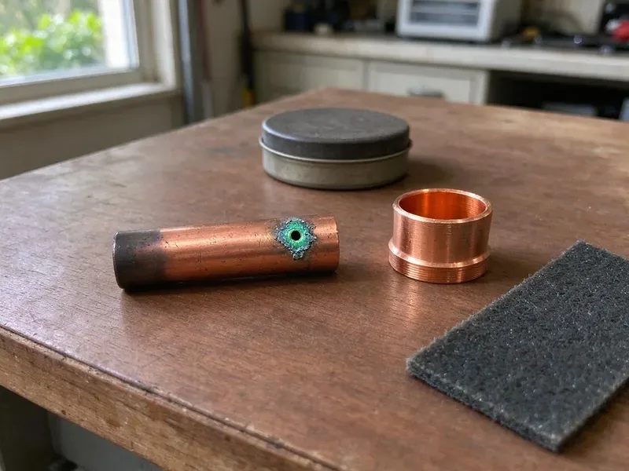

Trenchless Pipe Repair in Barre, VT
Old clay or cast iron sewer under the driveway in Barre, VT? Lining saves the concrete above it. CKV Plumbing handles it start to finish.
- 50-Year Liners
- Camera-Verified Results
- Small Access Pits Only
- Jointless, Root-Proof Pipe

No-Dig Pipe Repair That Lasts in Barre, VT
Our crew renews the pipe through small pits, and you get camera footage when it's done.
Trenchless Pipe Repair in Barre, VT With Lining and Bursting
CKV Plumbing repairs damaged underground pipe without a long trench across your property. We use two main methods. Lining puts a resin-saturated tube inside the old pipe to harden in place, while bursting pulls new HDPE through and splits the old pipe outward.
Some of what we do:
- Cured-in-place pipe lining for cracked, rooted or separated sewer lines
- Cured-in-place pipe (CIPP) lining
- Pre-lining hydro-jetting and post-install camera verification

Additional Plumbing Repair Services in Barre, VT
We offer expert plumbing repair services across Barre, VT to stop leaks, clear blockages, and keep every fixture working the way it should.


Customers
Why Choose CKV Plumbing for Trenchless Pipe Repair in Barre, VT?
Traditional pipe replacement can mean digging up concrete, pavers and landscaping that took years to establish. Trenchless repair avoids most of that and is often completed in a single day.
- Root Resistant, New liners and HDPE pipe hold up to roots and rust better than the clay or cast iron they replace.
- Long-Term Value, Avoiding major excavation and restoration usually makes trenchless the cheaper option over the life of the pipe.
- New Pipe Inside, The liner forms a strong, corrosion-resistant pipe inside your existing sewer.
Citywide Coverage
Anywhere in Barre, our crew can handle a camera inspection and a trenchless repair. Scheduling is quick. After the scope and your approval, the repair is usually within days and most homes are finished in one day on site.
Experienced Team
Crew members bring plumbing knowledge and trenchless skill to every job. You need both. Understanding how the pipe was installed and how it drains helps them choose the right liner thickness, resin and cure method for each line instead of using one setup on every job.
Safety-First Approach
Local Barre, VT codes apply to every trenchless job. We schedule inspections. That covers the liner materials, the cleanout and transition fittings, and the pit backfill, so the repair passes inspection and protects your property and our crew while the work is going on.
Trusted Certified Barre Plumbing Services Professionals
At CKV Plumbing, we take pride in licensed, certified plumbing services throughout Barre, VT. Credentials matter in this trade. Our plumbers hold recognized industry credentials, and they follow strict safety and quality rules on every repair, installation and maintenance call we run.
Call Us Now PHCC Plumbing Contractor Recognition
PHCC Plumbing Contractor Recognition Better Business Bureau (BBB) Accreditation
Better Business Bureau (BBB) Accreditation Angi Certified Pro
Angi Certified Pro ISO 9001 Quality Management Certification
ISO 9001 Quality Management CertificationTrenchless Pipe Repair Services in Barre, VT
Pipe Bursting Services in Barre, VT
Bursting replaces a pipe that is too far gone to line. A cone-shaped head breaks the old pipe. As a winch drags the head through, the old pipe fractures into the soil and new HDPE is pulled into the same path behind it. HDPE does not rust or leak at joints in Barre, VT soil.

Sewer Lateral Lining in Barre
Laterals are the most common candidates for trenchless repair. Old materials crack and sag. Clay, cast iron and Orangeburg pipe crack, sag or fill with roots over time, so we jet the line clean, inspect it by camera and choose lining or bursting based on what we see. The new line restores full flow and stands up to roots.
Commercial Trenchless Solutions in Barre
Commercial sites in Barre have longer runs and more laterals. Pavement covers most of it. Trenchless repair lets schools, offices and shops keep their lots and sidewalks open, since we work through cleanouts and manholes and only cut a small pit where one is needed. We schedule around your hours.
Pipe Bursting Trenchless Repair in Barre, VT
Bursting works when the pipe has collapsed or is too broken to line. It can go up a size. With an entry and exit pit dug, the winch pulls the head and new HDPE through, replacing the run in a day or two in most homes. CKV Plumbing fuses the HDPE into one length.
Sectional Point Repair in Barre
Sometimes only one joint or a few feet of pipe is bad. That calls for a sectional liner. We position a short resin-soaked sleeve over the damaged area with a camera, inflate it and let it cure, so you pay for a few feet of liner instead of the whole run. It suits isolated damage in Barre sewer lines.
Pipe Bursting in Barre, VT
Bursting is used when the old pipe is too damaged to line or needs a larger diameter. It needs two pits. The head fractures the old pipe as it travels, with new HDPE trailing behind, fused into one length with no joints.
Trenchless Sewer Line Repair in Barre
Tree roots, corrosion and soil movement wreck most sewer lines. Clay soils in river valleys drain poorly and can hold water against foundations, so sump systems are common in low-lying homes. We fix minor cracks with a spot liner. Longer damage gets a full-length liner, and a fully collapsed line gets burst and replaced, all without trenching across the yard or cutting the driveway at your home.

CIPP Lining for Clay and Cast Iron in Barre
Older Barre homes often have clay or cast iron sewer pipe. Both fail with age. Clay joints let roots in and cast iron scales and rusts through, and a liner seals both problems with a new jointless pipe that often outlasts the original material by decades. Only one or two access points are needed.
Trenchless Pipe Repair Near Me in Barre, VT
Typing 'trenchless pipe repair near me' in Barre, VT should get you a local crew. CKV Plumbing is one. Having worked laterals across the area, we can usually guess the pipe material before the camera goes in. That saves time.
Someone searching trenchless pipe repair near me usually wants the pipe fixed without wrecking the yard. That's our job. Local crews scope the line, say plainly whether lining or bursting fits and hand you a written price and the video.
CKV Plumbing at a Glance
- Licensed and insured plumbers serving Barre, VT
- 24/7 emergency service with same-day scheduling
- Clear written estimates, no hidden fees
- 4.8-star rated by 553+ Vermont customers
Barre Map
Barre Information
- Population
- 8,387
- Area codes
- Local
- Service area
- Barre and towns within a 40 mile drive
- Nearby
- Montpelier, St. Johnsbury, Middlebury, Essex Junction
Plenty of Barre, VT homes have sewer lines under mature trees, pavers and driveways, and trenchless repair spares that hardscape.
Talk to a Plumber
Call CKV Plumbing for reliable plumbing work done by licensed pros in Barre, VT.
Our Specialized Plumbing Services in Barre, VT
At CKV Plumbing, you get every kind of plumbing service from one company across Barre, VT. From leak detection to full system installs, our team works fast and charges fair prices on homes and commercial properties alike. Explore our core services below:


What a Trenchless Repair Looks Like in Barre, VT
Our trenchless process repairs your pipe quickly with minimal disruption.
Call for a Consult
Call CKV Plumbing at (802) 209-5139 and describe the backups or slow drains. We'll set up a camera inspection.
Camera Inspection
A sewer camera goes down the line to show exactly where the damage is, before anything is dug.
Pick the Method
Based on the footage, we recommend lining, bursting or a sectional repair and explain the materials.
Frequently Asked Questions About Trenchless Pipe Repair in Barre
CIPP lining typically costs $80 to $250 per foot. Bursting is similar. Bursting tends to be $60 to $200 per foot plus pits, and most home sewer lines land between $4,000 and $15,000.
We do. Sewer work often requires it. Permits are often required for major plumbing repairs under local codes, and we file the application and meets the inspector so you are not stuck with the paperwork.
No, though most can. Collapse is the main exception. Fully collapsed pipe, large offsets at joints or a pipe with a deep sag may still need excavation, and a camera inspection from us shows which category your line falls into.
Much less than digging. One or two pits. Most jobs need only a cleanout and one or two small access holes, so there is very little dirt, no trench across the lawn and far less restoration once the work is finished.
Lining builds a new pipe inside the old one. Bursting replaces it. A CIPP liner cures inside the host pipe, and bursting fractures the old pipe while dragging new HDPE in behind it.
Trenchless repair takes specialized equipment, materials and training. It should be done by an experienced contractor.
Most cracked, rooted or separated pipes can be lined. Collapses are different. A fully collapsed or deeply sagging line may need bursting or a dig, and the camera shows us which.
Many cities want a permit for sewer replacement, trenchless included. We check the local rules and pull permits when needed.
What People Are Saying About Our Plumbing Experts?

Megan L.
Our upstairs tub drained so slowly that every shower turned into a bath. CKV Plumbing pulled a wad of hair out of the stopper and then snaked the line past the trap. Three months later it still drains fast.
Drain Cleaning · St. Johnsbury, VT
Patricia H.
We had a slab leak that two other companies could not find. CKV Plumbing located it in under an hour with a listening device. They rerouted the line through the attic instead of breaking up the floor, so we kept our kitchen tile.
Slab Leak Repair · Essex Junction, VT
Jessica T.
We were adding a gas range in a kitchen remodel and needed a new line run from the meter. The plumber pulled the permit, ran the pipe through the crawl space, and had it inspected and approved within the week.
Gas Line Repair · St. Johnsbury, VT
Carlos V.
Our house still had galvanized pipe, and upstairs the shower was a trickle. The crew repiped everything in PEX over three days and patched every drywall hole before they left. The pressure difference is night and day.
Repiping · Montpelier, VTEmily R.
The shutoff valve under our kitchen sink snapped off in my hand on a Sunday morning. CKV Plumbing had someone out by early afternoon. He replaced both angle stops with quarter turn valves and showed me where our main shutoff was, which I honestly did not know.
Plumbing Repair · South Burlington, VT
Kevin O.
Before buying our house I paid for a sewer camera inspection. CKV Plumbing found a belly in the line that held standing water about forty feet from the cleanout. We used the video to get the sellers to fix it before closing.
Sewer Camera Inspection · South Burlington, VT